No phone? Tell a mentor and we'll sign you in.
Our last bootcamp session: from a button press to a moving robot
Picture this: a driver presses the A button on the gamepad, and the intake runs until it holds a game piece. By the end of today, you'll be able to trace that one press through every box below.
Remember input, process, output from our first session? Same idea, on wheels.
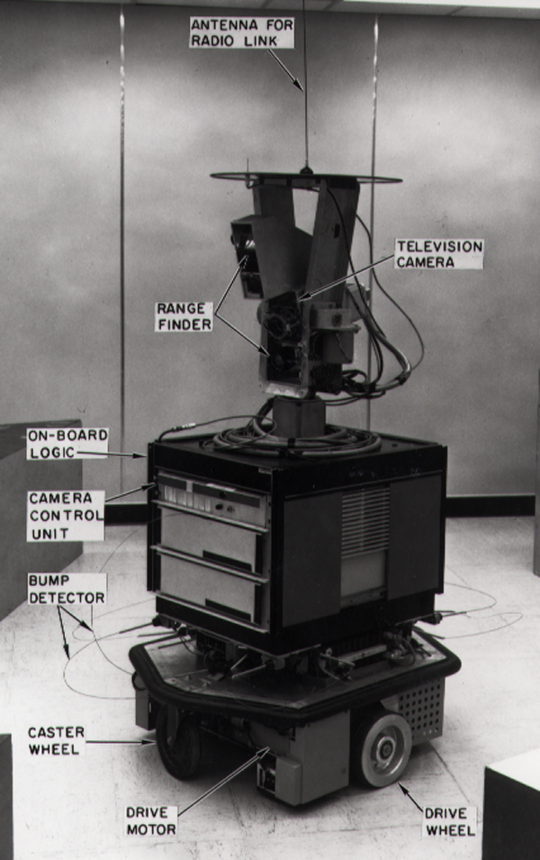
This is a robot seen from above. Every part is a subsystem: it has motors to move it and sensors to know what it's doing.
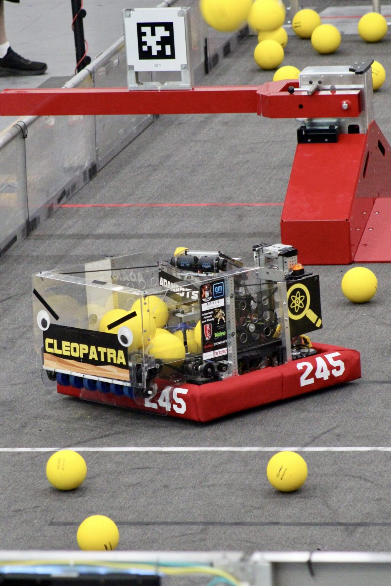
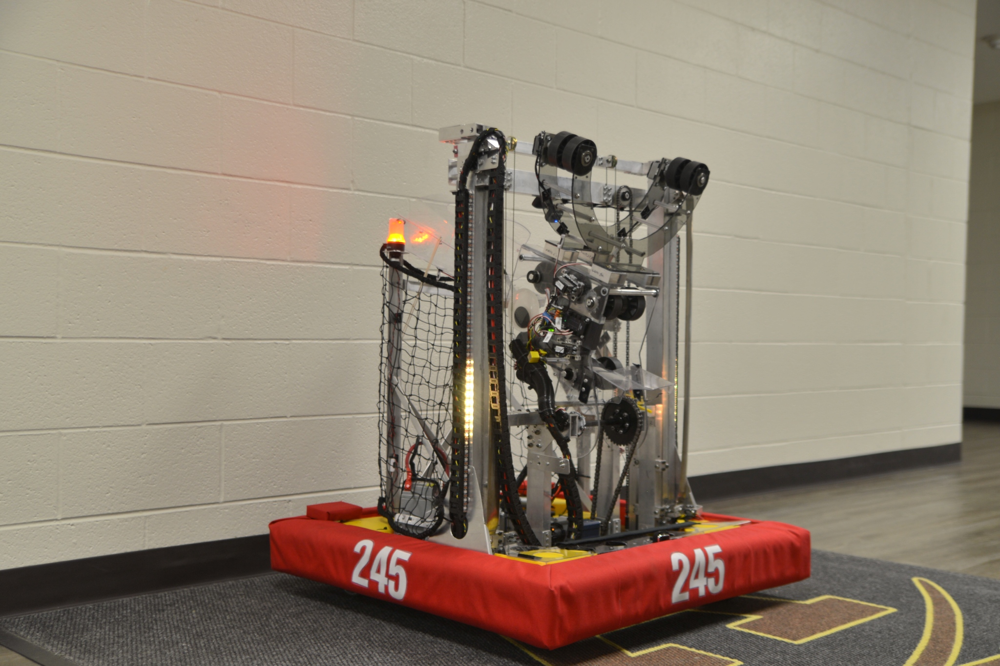
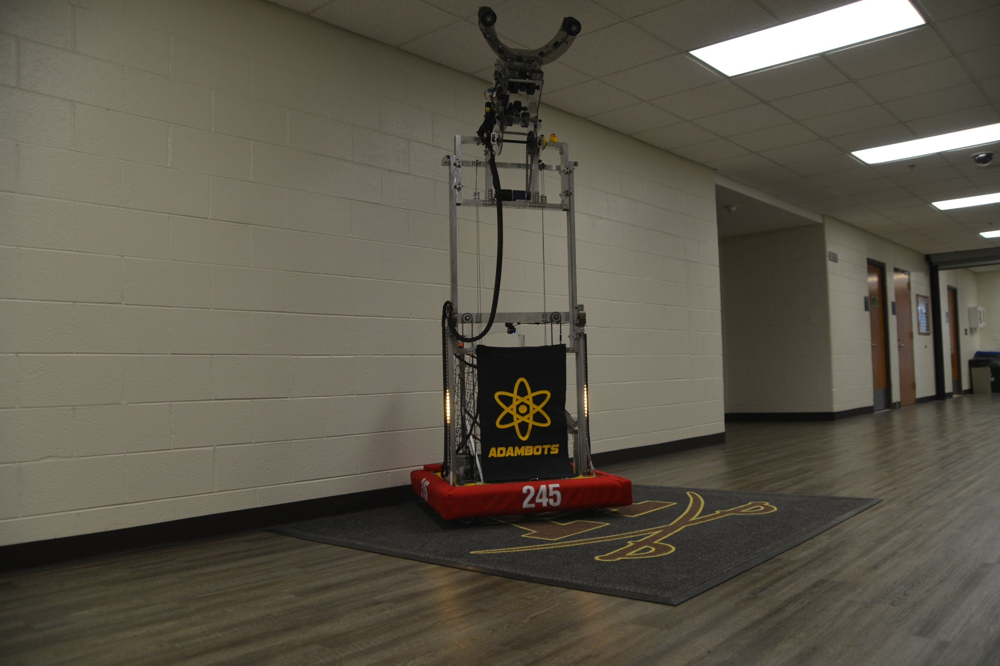
A bent part, a loose belt, a jammed roller.
A loose wire, a tripped breaker, the wrong CAN ID.
A bug, a wrong sign, a sensor read the wrong way round.
Power flows left to right, from the battery to every device on the robot.
A 12-volt sealed lead-acid battery, about 13 pounds. One per match; a full cart of them in the pit.
Remember the Battery class and isMatchReady()? This is the real thing it was about. Voltage drops while motors work hard, and comes back when they stop.
Main breaker off before you touch any wiring.
Never plug or unplug anything with power on.
Robot on its cart or on blocks when you test code.
Look, call "Enabling!", hand on E-Stop. Every time.
The robot's brain. Every wire on the robot ends up at one of these ports, directly or through another device.
A quad-core Raspberry Pi Compute Module 5 running Linux. Our Java program runs here, on the JVM.
A small chip (RP2350) that handles the Smart I/O ports quickly and reliably.
Knows which way the robot is facing (section 6).
Remember booting and the operating system from our first session, and the JVM? They're all in this box.
Pick a part on the left.
Back in 10 minutes. Next: making things move.
Next: what's inside each one.
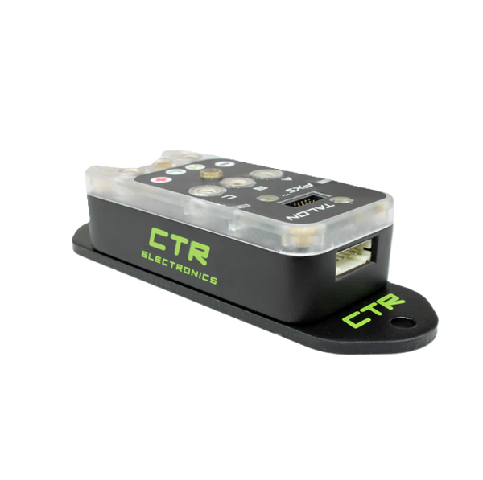
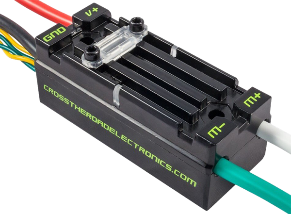
Our code sends a throttle from -1.0 to 1.0: motor.setThrottle(0.5). The controller turns it into fast pulses of battery power. Remember Math.clamp? This is why.
Positive spins it one way, negative the other.
Brushless motors cost real money. Current limits are cheap.
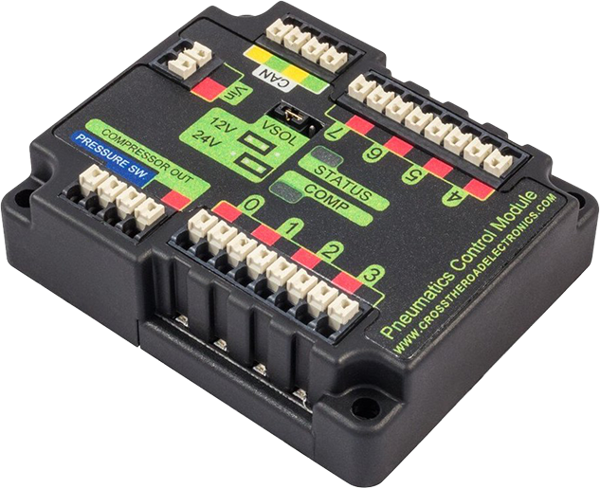
Air cylinders that push or pull, fast. Code opens and closes valves through the Pneumatics Control Module.
Signals for drivers: "game piece loaded", "aimed", "ready to climb". Wired to a Smart I/O port.
A coil of wire becomes a magnet when current flows and pulls the iron plunger in. Power off: a spring pushes it back out.
The plunger opens a path for air, and the air pushes a cylinder, fast and hard. Single solenoid: springs back when power is off. Double solenoid: two coils, stays where it was.
No air: the plunger is the push or pull. Here a pin locks a ratchet so the climber can't slip. Powered from a pneumatics module channel or a motor controller.
Plunger out · cylinder in · pin locked
Solenoid hookLock = new Solenoid(CANPort.CAN_S0, PneumaticsModuleType.CTRE_PCM, 0); hookLock.set(true); // power on: the valve opens or the pin pulls back
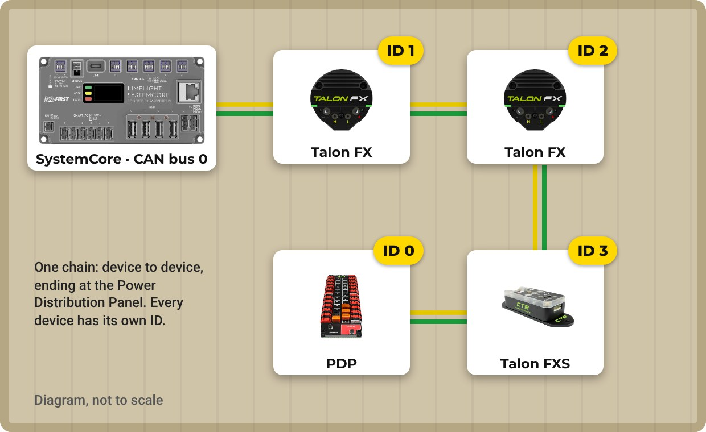
get() → falseget() → trueEach reading is one bit: on or off, true or false.
Watch the beam break closely.
The moving part presses a lever and clicks the switch. Cheap and simple; it has to touch.
A magnet on the moving part comes close. Nothing touches, so nothing wears out.
Like magnetic, but it notices any metal close by, no magnet needed.
Two parts facing each other. A game piece blocks the beam.
true or falseOne unit sends light and sees it bounce back off the object. Many have a sensitivity knob.
true or falseSends sound too high to hear and times the echo, like a bat. Gives a distance.
a distanceTimes how long invisible light takes to bounce back. Very accurate. CTRE's CANrange works this way, on the CAN bus.
a distanceA potentiometer: a knob the robot can read
SystemCore turns the voltage into a 12-bit number. 2 to the 12th is 4096, so the numbers go from 0 to 4095. Bits from our first session, again.
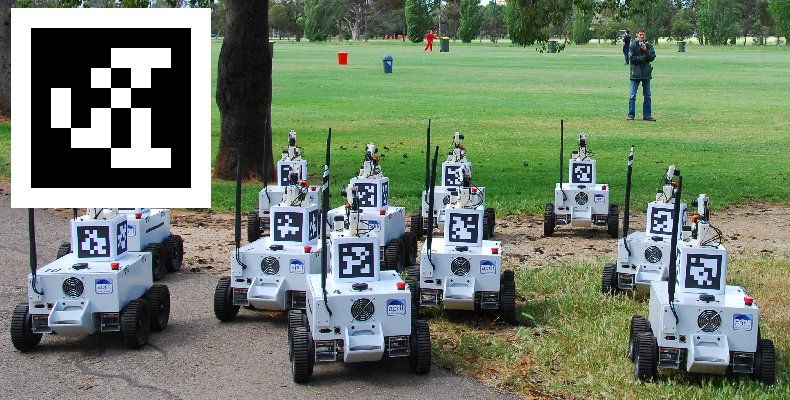
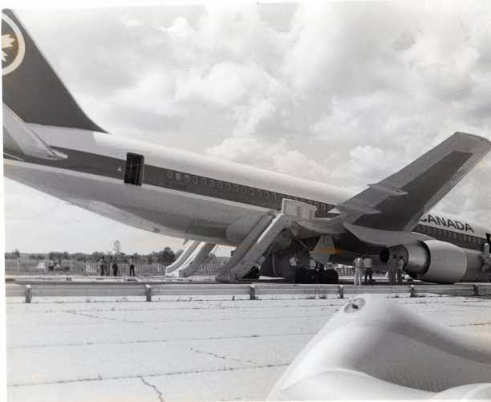
The encoder counts down when the arm goes up. One sign flip in code.
An unplugged beam break reads "nothing there" forever. No error, just wrong.
Readings jitter up and down a little. Code must allow for it.
Turns or meters? Degrees or radians? Ask the Gimli Glider.
!!private int loops = 0;
@Override
public void robotPeriodic() {
intake.periodic();
shooter.periodic();
Scheduler.getDefault().run();
!! loops++;
!! if (loops % 50 == 0) {
!! System.out.println("Game piece? " + intake.hasGamePiece());
!! }
}
main, then branch yourname-sensorsRobot.javaBack in 10 minutes. Next: the code that makes it all move.
motor.setThrottle(0.5);We write one line. WPILib turns it into the exact signals the hardware needs.
You've used it already: PWMTalonFX, DigitalInput and the import org.wpilib... lines. Vendor libraries, like CTRE's Phoenix 6, add classes for their own devices.
Every kind of hardware has a class. You make one object for each real device, with new.
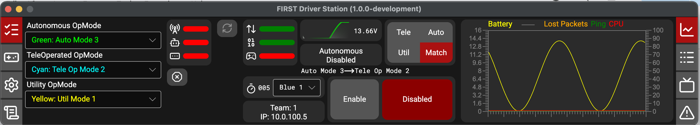
DriverControl.An OpMode is a small class. One line above it puts it in the drop-down. Match mode runs the chosen autonomous, then the chosen teleop.
This is the Sandbox you cloned last session. Every file has one job.
start() once→Loop every 20 msread · run code · send outputs→Disableend() once
while (!hasGamePiece()) {
motor.setThrottle(0.5);
}
The loop never finishes, so nothing else runs. Not the drivetrain, not the Driver Station link.
Each 20 ms: is there a game piece yet? No: keep the motor on and let everything else run. Yes: stop.
A part of the robot. A noun.
In code, WPILib calls it a Mechanism.
IntakeAn action. A verb.
intakeUntilFull()When: a button, or a sensor.
Buttons.XboxAButton
public class Intake implements Mechanism {
private final PWMTalonFX motor;
private final DigitalInput beamBreak;
public Intake() {
motor = new PWMTalonFX(Constants.kIntakeMotorChannel);
beamBreak = new DigitalInput(Constants.kBeamBreakChannel);
}
public void periodic() { }
public boolean hasGamePiece() { return !beamBreak.get(); }
public Command intake() { ... }
public Command stop() { ... }
}
implements Mechanism: the scheduler knows it's a part of the robot.Robot.java: intake.setDefaultCommand(intake.stop()); is what it does when no command needs it.periodic() runs
public void robotPeriodic() {
intake.periodic();
shooter.periodic();
!! Scheduler.getDefault().run();
}
void spin() { motor.setThrottle(0.5); }A normal method, with a name() -> motor.setThrottle(0.5)The same thing with no name, written right where it's needed. A lambda.coroutine -> { ... }A lambda that receives a value. Commands get a coroutine this way.this::hasGamePieceHands over an existing method without running it.
public Command intakeUntilFull() {
return run(coroutine -> {
motor.setThrottle(Constants.kIntakeSpeed);
coroutine.waitUntil(this::hasGamePiece);
motor.setThrottle(0.0);
}).named("Intake Until Full");
}
run means "this command uses the intake". The lambda is what it does.
public Command intakeUntilFull() {
return run(coroutine -> {
motor.setThrottle(Constants.kIntakeSpeed);
while (!hasGamePiece()) {
motor.setThrottle(Constants.kIntakeSpeed);
coroutine.yield();
}
motor.setThrottle(0.0);
})
.whenCanceled(() -> motor.setThrottle(0.0))
.named("Intake Until Full");
}
Older code, like our 2025 robot and most examples online (Commands v2), writes these as four separate methods: initialize(), execute(), isFinished(), end(). In v3 they're parts of one recipe, top to bottom.
waitUntil does the pausing for you. If you write your own loop in a command, end each pass with coroutine.yield(), like line 6 on the last slide. Forget it, and the code won't even build.
@Teleop(name = "Driver Control")
public class DriverControl implements OpMode {
public DriverControl(Robot robot) {
Buttons.XboxRightBumper.whileTrue(robot.intake.intake());
Buttons.XboxLeftBumper.whileTrue(robot.shooter.spinUp());
Buttons.XboxAButton.onTrue(robot.intake.intakeUntilFull());
}
}
public final class Buttons {
public static final CommandGamepad driver =
new CommandGamepad(1);
public static final Trigger XboxAButton =
driver.faceDown();
public static final Trigger XboxLeftBumper =
driver.leftBumper();
...
}
new Trigger(robot.intake::hasGamePiece).onTrue(robot.shooter.spinUp()); spins up the shooter the moment a game piece arrives.intakeUntilFull is interrupted, its last line never runs. That's fine: the intake's default command, stop(), takes over and stops the motor.Command.sequence(a, b) or a.andThen(b)coroutine.await(a); coroutine.await(b);Command.parallel(a, b) or a.alongWith(b)coroutine.awaitAll(a, b);Command.race(a, b)coroutine.awaitAny(a, b);coroutine.await(drive.leaveStartingArea()); coroutine.awaitAll(drive.driveToGamePiece(), intake.intakeUntilFull()); coroutine.await(ScoringCommands.shoot(intake, shooter));
public final class ScoringCommands {
public static Command shoot(Intake intake, Shooter shooter) {
return Command.requiring(intake, shooter).executing(coroutine -> {
coroutine.fork(shooter.spinUp());
coroutine.wait(Seconds.of(1));
coroutine.await(intake.intake().withTimeout(Seconds.of(0.5)));
}).named("Shoot");
}
}
Bind it like any other command: Buttons.XboxYButton.onTrue(ScoringCommands.shoot(robot.intake, robot.shooter));
coroutine can docoroutine.yield();coroutine.wait(Seconds.of(1));coroutine.waitUntil(this::hasGamePiece);coroutine.await(cmd);coroutine.awaitAll(a, b);coroutine.awaitAny(a, b);coroutine.fork(cmd);Every wait pauses only this command. The rest of the robot keeps running. Never use Thread.sleep() or a loop without yield().
yourname-sensors branch:intakeUntilFull() to subsystems/Intake.java (it's on the "Writing a command" slide, and in TRY-IT-5.md)Buttons.XboxAButton.onTrue(...) line to DriverControl.javaTRY-IT-5.md in the Sandbox. Ask a mentor; the finished code goes on the bootcamp site after the session.localhost:5811 in a browser. Click Place game piece, press Z: the piece rides in and the command stops by itself at the beam break.coroutine.wait(...)).Sense, think, act, with power under everything.
12.0 V or more, and breaker off before touching wires.
Every CAN device has its own ID.
Check a sensor before you trust it.
Never block the loop: commands wait for you.
coroutine.waitUntil do that a while loop can't?In five sessions you went from a light switch to a robot that waits for a game piece.
Bits and switches. Java. Classes and objects. VS Code, Git and deploying. Power, sensors, motors and commands. That's the whole stack, from transistor to teleop.
yourname-sensors branch. Get it reviewed and merged.You're now part of the AdamBots programming team. Let's build a robot.
| →SpacePgDnEnter | Next step or slide (also: click the right half of the screen, or a clicker) |
| ←PgUpBackspace | Back (also: click the left half, or right-click) |
| Home End | First slide / last slide |
| 12… then Enter | Jump to a slide number |
| T | Contents: jump to any slide (or the ☰ button, top-left) |
| N | Show or hide speaker notes |
| F | Fullscreen on / off |
| ? | This help |
| Esc | Close notes, contents, help or a photo |